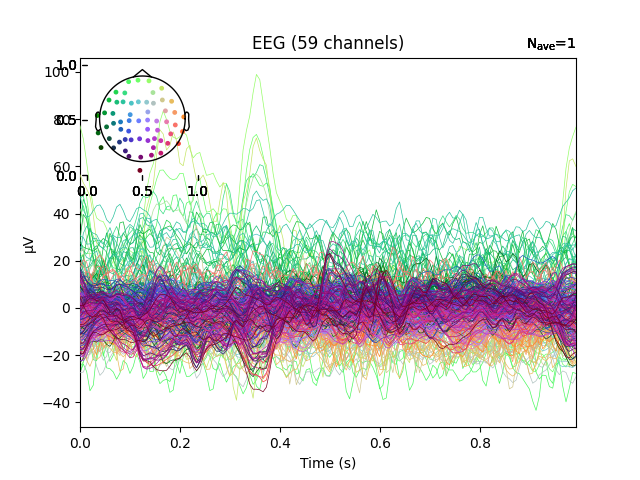

Note
Go to the end to download the full example code
Plot real-time epoch data with LSL client#
This example demonstrates how to use the LSL client to plot real-time collection of event data from an LSL stream. For the purposes of demo, a mock LSL stream is constructed. You can replace this with the stream of your choice by changing the host id to the desired stream.
Opening raw data file /home/circleci/mne_data/MNE-sample-data/MEG/sample/sample_audvis_filt-0-40_raw.fif...
Read a total of 4 projection items:
PCA-v1 (1 x 102) idle
PCA-v2 (1 x 102) idle
PCA-v3 (1 x 102) idle
Average EEG reference (1 x 60) idle
Range : 6450 ... 48149 = 42.956 ... 320.665 secs
Ready.
Reading 0 ... 4505 = 0.000 ... 30.003 secs...
Removing projector <Projection | PCA-v1, active : False, n_channels : 102>
Removing projector <Projection | PCA-v2, active : False, n_channels : 102>
Removing projector <Projection | PCA-v3, active : False, n_channels : 102>
Client: Waiting for server to start
Looking for LSL stream mne_stream...
mne_stream not found in streams: []
Looking for LSL stream mne_stream...
Found stream 'MNE' via mne_stream...
Client: Connected
Got epoch 1/5
Not setting metadata
1 matching events found
No baseline correction applied
Created an SSP operator (subspace dimension = 1)
1 projection items activated
Got epoch 2/5
Not setting metadata
1 matching events found
No baseline correction applied
Created an SSP operator (subspace dimension = 1)
1 projection items activated
Got epoch 3/5
Not setting metadata
1 matching events found
No baseline correction applied
Created an SSP operator (subspace dimension = 1)
1 projection items activated
Got epoch 4/5
Not setting metadata
1 matching events found
No baseline correction applied
Created an SSP operator (subspace dimension = 1)
1 projection items activated
Got epoch 5/5
Not setting metadata
1 matching events found
No baseline correction applied
Created an SSP operator (subspace dimension = 1)
1 projection items activated
Streams closed
# Author: Teon Brooks <teon.brooks@gmail.com>
#
# License: BSD (3-clause)
import matplotlib.pyplot as plt
from mne.datasets import sample
from mne.io import read_raw_fif
from mne_realtime import LSLClient, MockLSLStream
print(__doc__)
# this is the host id that identifies your stream on LSL
host = 'mne_stream'
# this is the max wait time in seconds until client connection
wait_max = 5
# Load a file to stream raw data
data_path = sample.data_path()
raw_fname = data_path / 'MEG' / 'sample' / 'sample_audvis_filt-0-40_raw.fif'
raw = read_raw_fif(raw_fname).crop(0, 30).load_data().pick('eeg')
# For this example, let's use the mock LSL stream.
_, ax = plt.subplots(1)
n_epochs = 5
# main function is necessary here to enable script as own program
# in such way a child process can be started (primarily for Windows)
if __name__ == '__main__':
with MockLSLStream(host, raw, 'eeg'):
with LSLClient(info=raw.info, host=host, wait_max=wait_max) as client:
client_info = client.get_measurement_info()
sfreq = int(client_info['sfreq'])
# let's observe ten seconds of data
for ii in range(n_epochs):
print('Got epoch %d/%d' % (ii + 1, n_epochs))
plt.cla()
epoch = client.get_data_as_epoch(n_samples=sfreq)
epoch.average().plot(axes=ax)
plt.pause(1.)
plt.draw()
print('Streams closed')
Total running time of the script: ( 0 minutes 8.249 seconds)
Estimated memory usage: 11 MB